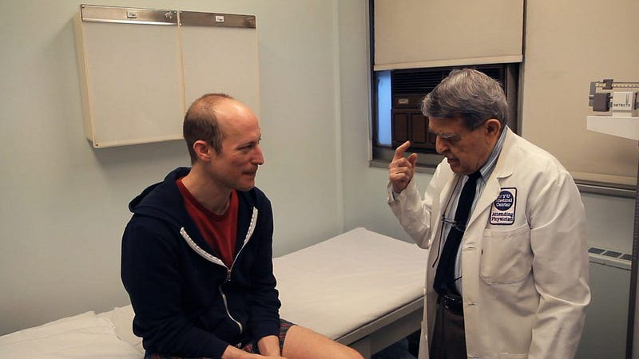
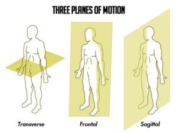

Why should you listen to me? We all know Jesse is not a physical therapist.
But why?
Well, as a developer I suffered from major chronic pains programmers are prone to.
RSI from mixing video games and coding.
Back pain from all the time sitting.
Forward head posture from looking at a screen all day.
And more maladies...
For years I struggled with all three of these as I sought to be the best programmer possible.
4 years ago I said enough. I am going to figure out a system for coding forever.
How do I become a developer without back pain, RSI and posture issues?
Obviously outside genetics people have figured it out with office work. So why can't I?
Since then I have experimented to create a system for programmers. I read 15 books (doing all the exercises for a long periods), attended many physical therapy sessions and asked many questions.
These books were not small books either, most were over 300 pages, and I did a lot of work trying out every little thing in them.
Through long-term trial and error I discovered what works and what doesn't work. And man did I find out a LOT of stuff that doesn't work.
In the past I created a blog post How to Code Forever: You Guide to RSI. If you want to get the absolute best advice for RSI, go there.
There will be blogs for the three greatest maladies programmers and office workers face: back pain, RSI and forward head posture.
Perhaps the most difficult thing office workers deal with is forward head posture. It is inevitable. Code long enough in the wrong seated positions and you will develop forward head posture.
These days as I write this article on back pain I am doing experimentation on forward head posture (I have a forward posture from endless hours of coding).
My experiments seem to be paying off and I see great progress in my posture in a short period.
It seems in the future you should see a great article on posture as it seems I may have cracked the code, finally!
Why sit?
Sitting is the absolute GOAT for programming with high performing focus.
You will find most people that get a convertible stand-up desk always tend to sit while coding, even while they plan not to.
It is a natural disposition to focus with more clarity while sitting.
Convertible desks are thus are not recommended in the physical therapy world.
Instead you are told to get a static stand-up desk from which you are always forced to stand.
I do advocate for that. That is a good idea and you should do it if you can afford it.
But... sitting has its merits.
You may find yourself wanting that extra boost in focus from sitting, or you may require yourself to sit long term in given circumstances.
For that situation, like driving, office work or coding, I want to give you the back pain cure.
A New Model of Pain
In the orthopedic industry, college graduates are taught a mainstream model on the origins of pain.
Everyone is taught this model. We believe its real and give no second thought because, well, everyone believes it.
Let me show you the pain model taught in most countries:

Imagine the box in the middle is your body. We receive a stimulus from activity such as video games, gardening, weight lifting, coding.
Out of the body from this stimulus, we feel pain, or simply we feel.
When I meet coders, office workers or someone from church, often I hear they have back pain.
It is a slipped disc.
It is tendinitis of the muscle.
It is a pulled muscle.
It is posture, arthritis, unequal limbs
I have heard all of this. Time after time again my friends in the past lined up to their orthopedic and this is what they were told.
Quit your activity, work on back strength, improve hip mobility & progressively overload.
And while that advice is great for building resiliency, it is not the actual cure to pain itself.
I see it all the time. For that particular friend resilience building did not work.
Can you guess where they went?
They went to the human build a back store and got surgery all based on stimulus.
I have seen some amazing recoveries with surgery, true. Though I have seen more people get worse or stay the same after surgery.
While with this new model of pain I am about to show you I have seen a grand majority of people recover. It is in fact rare for people not to recover with this new model.
Why? Because it is true.
This is all done without paying money, without scans, surgeries and pain killers.
Here is the new model of pain...

If you come to believe in this model of pain and thoroughly follow the advice related to it. You will be cured.
Your pain will subside substantially all the way to nothing.
Imagine this, unconscious emotion is 40% the reason for pain, faith is 30% and stimulus is only 30%.
When we go to an orthopedic or a rehabilitation center, they only focus on 30% of the problem, the stimulus.
Yes, physically manipulating the biological mechanics of your back are important. But it is only 30% of the problem.
If you don't fix the rest, the pain is going to stay.
This is what happened to me.
For 2 years I struggled with the inability to sit for more than 15 minutes. Not only that I could not lift an 80 lb dead lift, could not carry standard items and toward the last 6 months of my back pain, could not get out of bed.
I tried myofascial release, loads of physical therapy and rehabilitation, many many exercises, potions, pills, massage and considered surgery.
It wasn't until I applied all three parts to the new model of pain that my back issues subsided to nothing in a few short months.
On top of that my RSI, plantar fasciitis, neck pain, jaw pain and fibromyalgia-like pain subsided as well.
Eventually within the year I was dead lifting ~300lbs, jogging, sitting all day coding and doing landscaping on the side for my family.
I want to get into addressing the actual sources of pain, however there are some things to consider as well.
If you haven't already you should see a doctor and get a work up. Make sure you don't have cancer, autoimmune disorders, anemia, broken bones, torn ligaments, bad blood work, constipation or any type of virus.
Obviously those are not what we are talking about and those need to get addressed independently. They require medical attention.
However this model of pain is 100% the cure to pain from...
- "slipped disc"
- "herniated disc"
- "misaligned vertebrae"
- "arthritis"
- "tendinitis of the muscles"
- "unknown back pain"
- "posture based pain"
- "uneven limbs"
- "degenerative disc disease"
- "Scolioses"
- "spondylolisthesis"
- "hyper mobility"
- think anything like these
If you are diagnosed with things like these then everything I am mentioning in this blog is for you!
Okay with those qualifiers done, lets get into the cure...
Emotional Trauma
Emotional trauma is the single greatest factor in chronic pain.
There is a connection between the body and the mind from which past emotional disturbance creates real injuries.
Many injuries and visible causes of pain are actually created through emotional disturbance.
And the cure is to develop an emotional congruence between peace and chaos.
This is perhaps the hardest sell in this entire article.
The benefits of addressing your unconscious are unbelievable!
The unconscious is a source of constant stress, anxiety and finally the main factor in back pain.
This is the most important part of overcoming back pain. More than faith and more than stimulus.
This addressing of emotional disturbance is so profound, it even works in people who have chronic conditions.
Nicole Sachs is a great example and influencer on this cure.
Due to a terrible back disorder she had from birth, doctors told her she would be confined to a wheelchair and be unable to walk in older age.
They said childbirth would kill her and her chronic pain will be severe for her whole life.
For many years in her younger age she dreaded life with this disorder. Essentially, two lower vertebra are chronically broken apart, making her unable to lift or strain that part of her body.
She eventually discovered this pain model and committed to it.
Even with this condition she lives a normal and prosperous life with no back pain and even had children.
Of course she still has the condition (spondylolisthesis), but the pain is minimal to none.
And of course she limits her physical limits to what a trained professional recommends..
She is not dead lifting and lifting heavy things. Though she does love jogging...
Nicole Sachs has her own podcast and book on the topic as well.
Now, finally we get to the primary method for addressing unconscious emotion.
I implore you to try what Nicole calls journal speak.
It is a methodology for releasing past trauma from our unconscious.
I wrote about how to do it in previous guides, but decided to give you a specific resource for your future reference.
For now I recommend book marking this journalspeak link (https://www.thecureforchronicpain.com/journalspeak), finishing our blog here then read her journal speak practice.
Faith
What does faith mean in this new model of pain?
It means faith in this model of pain itself. I will give you its name. It is called TMS (The Mindbody Syndrome).
By resolving all three of these in TMS your pain will go away. That faith, the belief your pain is not based on the injury but emotional disturbance can remove a vast quantity of pain.
Why? Because it is true.
In the TMS world faith is built by consuming content regarding TMS. You want to develop a zeal for the true human condition and soon after be pain free.
These are the absolute GOAT resources for beating back pain. Pick the orifice you want to heal from (sorry I had to say it that way)...
Video: https://bit.ly/49S03Fs
Books: https://bit.ly/4a8BAML
Podcasts: https://bit.ly/499eMey (start with episode 1 and continue chronologically)
(This post may contain affiliate links. Meaning, I get a commission if you purchase through my links, at no cost to you)
Stimulus
Exercise is not a cure but a way to make yourself better able to endure physical hardship.
That is literally the only reason I write this section. Because resilience is useful. Honestly this blog can go without this section but I wanted to make this a more complete resource.
The first piece of theory I want to cover is to distinguish what does and does not matter in regards to pain.
Pain is different than resiliency.
One is about comfort and the other is about performance.
Can you comfortable sit and code for hours? Can you walk around, cook and sleep? That is pain.
Performance is about working yourself in manual labor, lifting in the gym, doing cardio workouts and dealing with physical requirements of life.
For pain, these are the things that matter...
- Don't lay on a cheap couch long term (good couches are fine)
- Replace bad shoes with good shoes
- Reduce activity or lift load if it is too much (this is temporary)
- Barbell squat only if you have the mobility (this is major)
- Sit on soft/cushioned surfaces (always do this)
These don't matter for pure pain:
- Your weight below 40 BMI (You can barely jog after that)
- Your posture
- Your overall mobility (this is great for resilience but not pain)
Interestingly posture, mobility and body weight will affect performance but they leave pain unchanged.
The body tends to adapt to these three things and if you address The Mindbody Connection these will be a non-issue.
Okay, now that we got that out of the way, lets talk about resilience.
The foremost concept in the world of resilience from pain is the composition of the back or the mechanics of the back.
The back is composed of a guy wire-like system of tissue holding together the skeleton of your spine.

The spine stays upright under load due to this system and is able to lift sustainably due to the strength of the tissues surrounding it.
There are three planes of movement under which the tissues must be able to endure load:
Your goal in life is to improve the stability of your guy-wires in all three planes.
Do this and you will be able to do more yard work, gardening, heavy lifting and all kinds of things.
What I recommend specifically is to do exercises which give resilience to all three planes at once.
Two particular systems are involved in this. The gluteal muscles (butt muscles) and the guy wires.
I will give you three particular exercises which will build your resilience.
They are...
- Walking semi-quickly (all three planes)
- McGill big 3 (For severe pain patients)
- Farmers carry (all three planes)
- Hexbar deadlift (gluteal, all three planes)
- Suitcase carry (all three planes)
I placed these in order of severity. Number 1 should be done if you have the worst pain, 2 for worst pain, 3 if less pain, hexbar if no pain and suitcase carry for no pain.
Your goal should be to develop the strength of your guy wires and butt either at home or in the gym.
You don't need to do the McGill exercises if you are not in pain. Though there are a lot of zealots out there for those 3 exercises.
You can do a little trial and error, visit a physical therapist and ask about this, or ask around for exercises regarding back stability.
Eventually you should find yourself more resilient over time.
Lastly, the best metric for whether you had a successful workout (in regards to resilience/pain) is if you feel better after working out.
Each workout session should feel like you just came out of physical therapy.
You should be stronger, more capable and almost dependent on your workouts to stay resilient (because you are!).
Me personally at this point, I am able to stay out of pain without working out.
But I like to exercise to perform the manual labor necessary for family work at higher levels.
Anywho, I hope you learned something...
CTA: Check out my book on learning code. Its about learning code itself, not Computer Science
Happy coding!
Resources
Greatest guide to RSI: How to Code Forever: A Programmers Greatest Guide to RSI
Nicole Sachs: https://www.thecureforchronicpain.com/aboutnicole
Podcast: https://podcasts.apple.com/us/podcast/the-cure-for-chronic-pain-with-nicole-sachs-lcsw/id1439580309
Journal speak: https://www.thecureforchronicpain.com/journalspeak
Dr. Sarno lecture: https://bit.ly/49S03Fs
Dr. Sarno books: https://bit.ly/4a8BAML